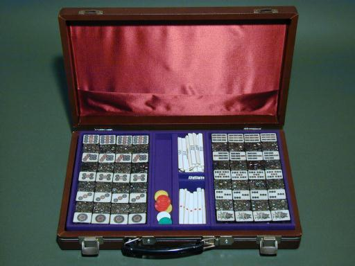
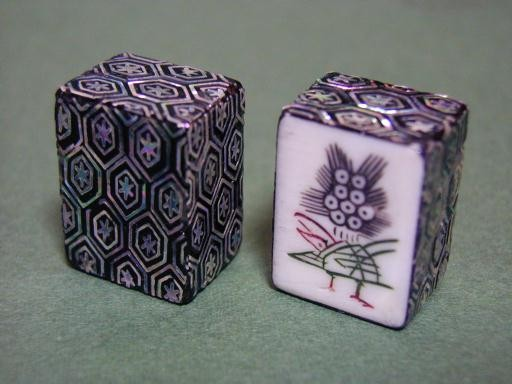

Tile colection 珍奇牌。
（10）象嵌牌
２５年くらい前、韓国に発注して作って貰った象嵌細工牌。牌そのものは合成樹脂製。牌の表面を漆で塗り固め、貝殻細工を張り付けたもの。
はっきりした値段は忘れたが、円とウオンとの差があり、思ったよりは値打ちに出来た記憶。
全体写真では分かりにくいが、下記の写真だと職人の腕がよく分かる。この銀色の筋の一つ一つが、貝殻の真珠層を線状に切り取り、それを漆に張り付けるという気の遠くなるような手作業による。
せっかく作ったものの、細工が剥離するのは恐ろしくて一度も使用してない。。。(-_-)